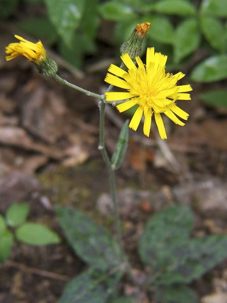

15 SEPT 2025
Journées du Patrimoine
Circuit découverte des moulins avec démonstration de mouture et dégustation de pain local cuit au four communal.
Lire plus

Un voyage immobile au cœur du Ségala.
Découvrez les trois piliers qui fondent l'âme de Saint-Hilaire. Une exploration entre nature sauvage, pierres séculaires et mémoire vivante.

Moulins et pierres sèches, témoins de notre histoire.

Une flore sauvage d'une richesse exceptionnelle.

Les récits et visages de ceux qui ont fait le village.
Saint-Hilaire est une commune rare du Ségala Lotois. Terre de contrastes au climat montagnard, elle est drainée par les eaux vives du Veyre.
Ici, le temps semble ralentir. Chaque pierre, chaque fleur, chaque sentier raconte une histoire que nous avons à cœur de préserver.
Jadis essentiels à la vie agricole, les moulins jalonnent le cours du Veyre. Ces bâtisses en pierre, souvent envahies par la végétation, racontent l'époque où chaque grain était moulu localement. L'association œuvre à leur recensement précis pour préserver cette ingénierie rurale.

Véritables cœurs battants des hameaux, les fours à pain symbolisaient le partage. Plusieurs fours communaux ont été patiemment restaurés et s'embrasent à nouveau lors des fêtes de village, perpétuant des gestes séculaires et rassemblant les habitants autour du pain chaud.

Partez à la découverte des joyaux floraux qui égayent nos campagnes au fil des saisons. Des orchidées délicates aux plantes médicinales ancestrales, notre patrimoine botanique local est d'une richesse insoupçonnée.
Au printemps, nos talus et sous-bois se transforment en une galerie d'art naturel, où les orchidées sauvages déploient leurs formes fascinantes.

Visible dès la fin avril, cette orchidée aux tons pourprés forme des épis denses et élancés. Son nom latin Orchis mascula évoque sa silhouette robuste. Elle préfère les prairies semi-ombragées et les lisières de forêt.
Visible dès la fin avril, cette orchidée aux tons pourprés forme des épis denses et élancés. Son nom latin Orchis mascula évoque sa silhouette robuste. Elle préfère les prairies semi-ombragées et les lisières de forêt.

Fleurissant mi-mai, cette orchidée tire son nom de ses fleurs supérieures qui semblent avoir été noircies par le feu. Son parfum subtil de vanille attire les pollinisateurs.

Cette élégante orchidée blanche se distingue par sa hampe florale élancée. Elle affectionne les sous-bois clairs et illumine les zones ombragées de nos bois.

Une orchidée spectaculaire par sa taille et son odeur caractéristique. Ses longs pétales en lanières lui donnent un aspect échevelé unique.

Dès début avril, cette petite fleur dorée tapisse les sous-bois humides et les bords de ruisseaux. Facilement identifiable par ses 8 à 12 pétales jaune vif et brillants, elle forme souvent des colonies étendues qui illuminent le sol forestier au sortir de l'hiver.

Fleurissant fin mai, l'ancolie enchante par ses fleurs bleues ou violettes aux éperons recourbés caractéristiques. Cette renonculacée élégante, aussi appelée "gant de Notre-Dame", pousse dans les prairies fraîches et les lisières forestières où elle attire de nombreux pollinisateurs.

L'asphodèle, reconnaissable à sa hampe florale élancée portant de nombreuses fleurs blanches étoilées, représente un élément emblématique mais de plus en plus rare de notre flore locale. Cette liliacée majestueuse fleurit généralement fin mai, illuminant de ses épis blancs les prairies naturelles.
Autrefois commune dans les prairies de fauche du Ségala, cette plante vivace a considérablement régressé ces dernières décennies. Ses tubercules racinaires, similaires à ceux du dahlia, supportent mal le travail mécanique des sols agricoles modernes. Les labours et autres pratiques intensives ont ainsi progressivement fait disparaître cette espèce de nombreuses parcelles.
En raison de son déclin marqué, il est vivement recommandé de ne pas cueillir l'asphodèle afin de préserver les populations restantes.

Cette grande plante des lieux humides dresse ses plumes vaporeuses de fleurs blanc crème. Elle est célèbre pour contenir de l'acide salicylique.


Surnommé "l'herbe de la Saint-Jean", le millepertuis s'épanouit au solstice d'été. Ses fleurs jaune d'or perforées contiennent une huile rouge caractéristique.

Une des premières fleurs du printemps. Ses pétales roses recourbés et ses feuilles tachetées en font une espèce remarquable des sous-bois frais.

Petite étoile bleue des sous-bois, la scille annonce la fin de l'hiver. Elle forme souvent des tapis bleutés spectaculaires avec les anémones.

Plante médicinale aux multiples vertus, elle prospère dans les prairies ensoleillées.

Commune dans nos prairies, cette "tête de moineau" aux fleurs purpurines attire une multitude de papillons tout l'été.

Avec ses fleurs jaunes semblables à celles du pissenlit, elle colore les talus secs. Son nom rappelle qu'on croyait autrefois qu'elle affûtait la vue des éperviers.

Plante parasite aux étranges fleurs violettes qui sortent directement de terre au pied des peupliers et des saules en zones humides.

Tapissant les sous-bois de ses étoiles blanches dès mars, elle est l'annonciatrice du printemps dans nos forêts de feuillus.
Dates indicatives sujettes aux variations climatiques.


"Avoir 20 ans en période de guerre cela marque toute une vie. Ma génération a été meurtrie par ce drame..."
"Le Ségala était la terre du seigle, un pays rude. On en faisait un pain noir qui nourrissait les familles nombreuses. C'était dur, mais il y avait de la solidarité."
"Les foires étaient les grands moments de l'année. On y vendait les bêtes, on y prenait des nouvelles... tout le canton s'y retrouvait."
L'association enregistre ces témoignages précieux.
Rejoignez-nous pour préserver, restaurer et faire vivre notre héritage commun.
Fondée par des passionnés, l'association "Saint Hilaire, Mémoire et Patrimoine" œuvre bénévolement pour la sauvegarde de l'identité locale.
Suivez la vie de l'association et ne manquez aucun événement.
Circuit découverte des moulins avec démonstration de mouture et dégustation de pain local cuit au four communal.

Une vingtaine de participants pour cette promenade matinale sur les coteaux calcaires. Bilan : 8 espèces observées !
D'autres sorties et conférences sont en préparation.